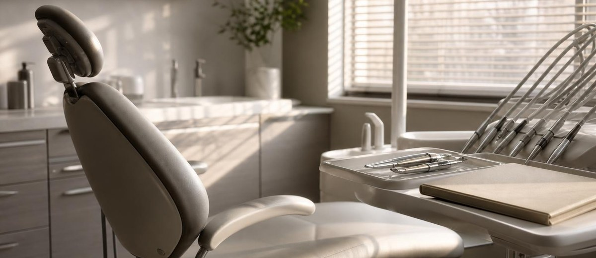

Presupuesto dental aceptado sin cita: quién da el siguiente paso

El paciente ha dicho que sí. El presupuesto figura como aceptado. Pero abres la agenda y no tiene cita.
No hace falta otra campaña para detectar ese problema. Hace falta saber qué ocurrió entre la conversación y la salida por la puerta. Quizá faltaba consultar un horario. Quizá quedó una duda clínica. Quizá alguien dijo «ya te llamamos» y nadie se apuntó la llamada.
Este artículo no trata de convencer a quien todavía está decidiendo. Trata de un paso más concreto: cómo acompañar a quien ha manifestado que quiere empezar, sin dar por hecho que todo está resuelto.
1. Aceptado no significa preparado para empezar
Una etiqueta en el programa resume demasiado. Puede indicar que el paciente está conforme con el importe, pero no que tenga claras las visitas, que pueda asumir el calendario o que haya resuelto sus preguntas con el profesional.
Además, aceptar un presupuesto no sustituye el consentimiento informado ni las comprobaciones clínicas necesarias. Recepción organiza el siguiente paso; las dudas sobre indicaciones, riesgos o alternativas corresponden al profesional sanitario.
Conviene distinguir tres situaciones: listo para agendar, pendiente de una aclaración y aplazado por decisión del paciente. Si las tres quedan bajo el mismo «aceptado», dirección no sabe cuántas citas puede organizar ni qué trabajo falta.
El presupuesto puede estar aceptado y la siguiente acción seguir sin dueño.
2. Asignar una persona, una acción y una fecha
«Lo lleva recepción» describe un departamento. No asigna una tarea. Cuando coinciden una llamada, una llegada y un cambio de turno, esa diferencia importa.
No se necesita una herramienta nueva para empezar. Sí hace falta que el sistema que ya utiliza la clínica permita localizar estos datos sin reconstruir toda la conversación:
- Qué falta: concretar horario, resolver una duda con el doctor o esperar la decisión del paciente.
- Quién se ocupa: una persona identificada, con un relevo previsto si está ausente.
- Próxima acción: llamar en el momento acordado, ofrecer opciones de cita o coordinar una aclaración clínica.
- Cuándo: una fecha concreta, no «la semana que viene» sin más.
- Resultado: cita asignada, nuevo acuerdo, aplazamiento o decisión de no continuar.
La fecha no debe convertirse en una excusa para insistir. Sirve para cumplir lo pactado. Si el paciente pide tiempo, ese acuerdo también forma parte del trabajo.
3. El cambio de turno no puede reiniciar la conversación
Imagina este ejemplo ficticio. Una paciente acepta el presupuesto un lunes por la mañana, pero necesita confirmar sus turnos laborales. Acuerda que la llamen el jueves por la tarde. La persona que la atendió no trabaja esa tarde.
Si solo dejó escrito «aceptado», su compañera no sabe si debe llamar, esperar o preguntar al doctor. Si anotó el acuerdo, la persona responsable y el relevo, puede continuar sin hacer que la paciente empiece de cero.
La conversación podría abrirse así: «Quedamos en hablar hoy para ver cómo te encajan las citas. ¿Has podido mirar tus horarios o prefieres que lo retomemos otro día?».
No hay descuento ni urgencia artificial. Hay memoria de lo hablado y espacio para responder. Si aparece una duda sobre el tratamiento, se deriva al profesional adecuado. Si la paciente ya no quiere seguir, se registra y se respeta.
4. Medir el atasco sin convertirlo en presión
Contar presupuestos aceptados puede dar una tranquilidad engañosa. Para entender este tramo del proceso conviene mirar también cuántos siguen sin cita y por qué.
Una revisión semanal puede separar los pendientes de horario, las aclaraciones clínicas, los aplazamientos solicitados y los casos sin próxima acción. Este último grupo señala un fallo organizativo; los demás necesitan respuestas distintas, no una llamada idéntica para todos.
También sirve observar el tiempo entre la aceptación y la asignación de cita, distinguiendo las demoras elegidas por el paciente de las causadas por la clínica. No existe un plazo universal que deba imponerse a todos los tratamientos.
El objetivo no es premiar a quien agenda más deprisa. Es detectar compromisos incumplidos, falta de disponibilidad o pasos que nadie tiene claros. Una cita conseguida a presión no demuestra que el proceso funcione bien.
5. Antes de pedir más demanda, comprobar este paso
Esta revisión no implica detener la captación ni asumir que todos los huecos se resolverán con seguimiento. Permite tomar decisiones con algo más que la sensación de que «faltan pacientes».
Si hay personas dispuestas a empezar y no encuentran horario, el problema puede estar en la capacidad. Si faltan aclaraciones, toca mejorar la explicación. Si nadie tiene asignada la próxima acción, toca ordenar el trabajo.
Es una conexión natural con Método EBA: mirar el marketing dental junto a recepción, gestión y experiencia del paciente. La captación no explica por sí sola lo que ocurre después de la primera visita.
Un buen cierre de esta revisión no es «hemos llamado a todos». Es poder decir qué necesita cada paciente, qué hemos acordado y quién se ocupa. También cuando la respuesta es «ahora no».